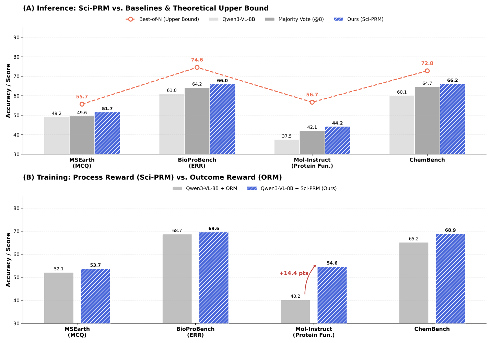
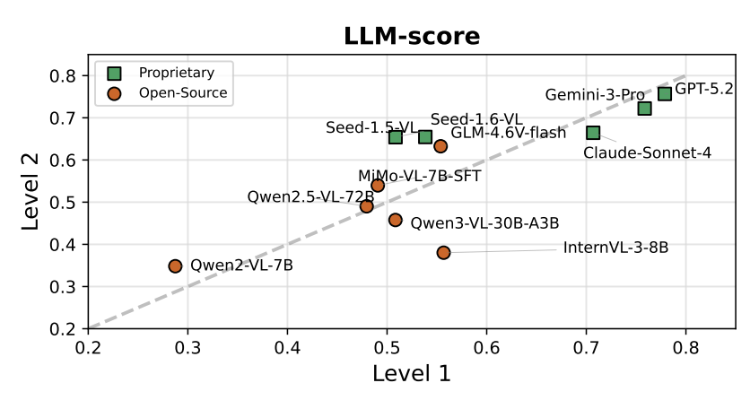
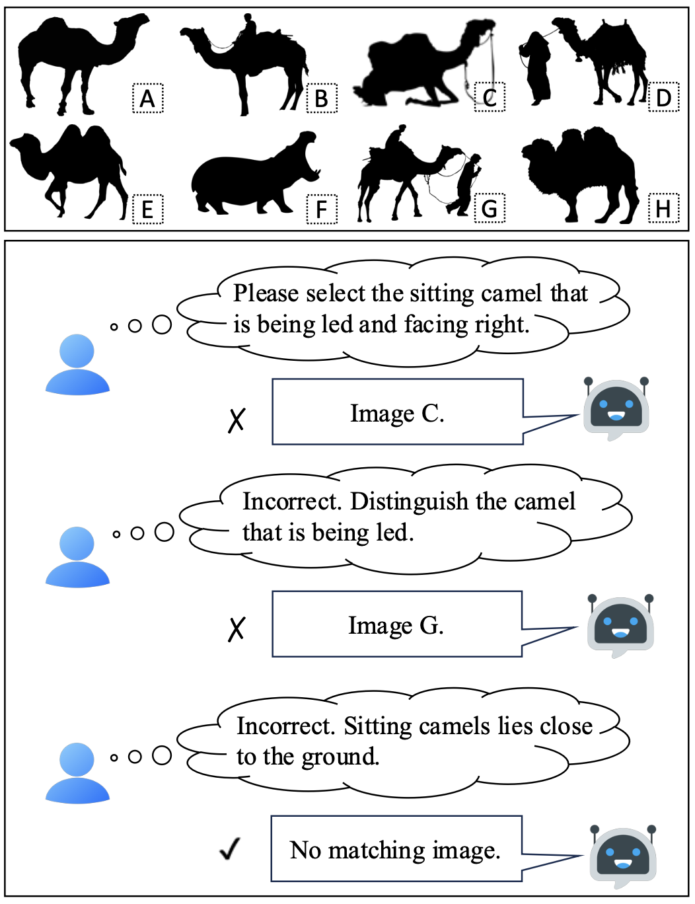
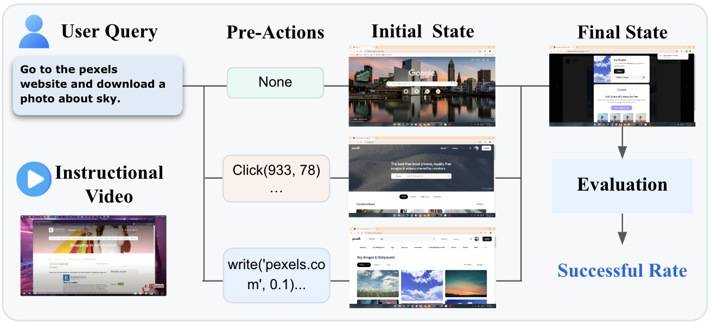
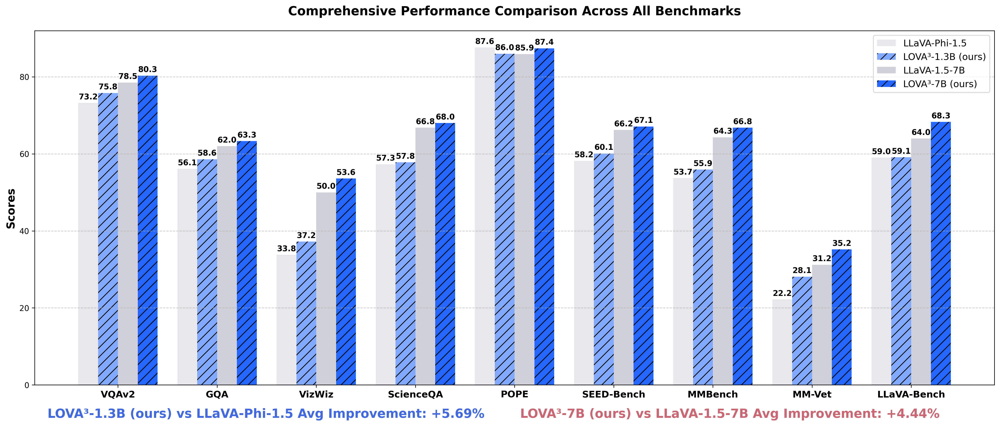
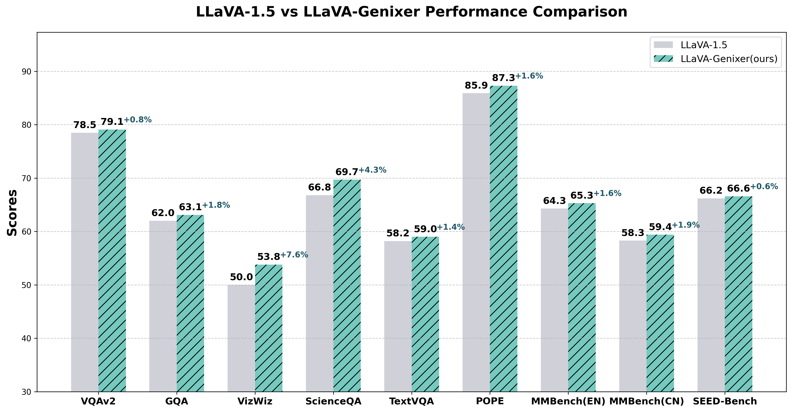
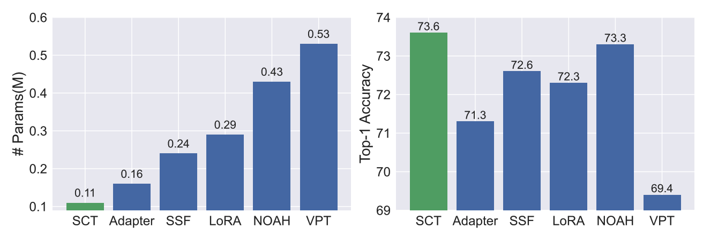

Henry Hengyuan Zhao
Hi 👋, I'm Henry, a PhD student in the
Show Lab
at the National University of Singapore, advised by
Prof. Mike Zheng Shou.
I work on multimodal post-training and AI agents, with a focus on model roles/behavior, reasoning faithfulness.
Selected work: chart-to-code (Chart2Code), agent–computer interaction
(WorldGUI),
large multimodal model training
(Genixer,
LOVA3),
and interactive alignment/evaluation
(InterFeedback).
📢 News
- [05/2026] Sci-PRM is accepted by KDD 2026.
- [04/2026] Chart2Code is accepted by ACL 2026 Main.
- [08/2025] InterFeedBack is accepted by EMNLP 2025 Findings.
- [03/2025] InterFeedBack is accepted by ICLR 2025 Bidirectional Human-AI Alignment Workshop.
- [02/2025] Check our new preprint about WorldGUI: Dynamic Testing for Comprehensive Desktop GUI Automation
- [12/2024] I will present our NeurIPS paper LOVA3 at Vancouver.
- [10/2024] I will present our ECCV paper Genixer at Milano.
- [09/2024] One paper is accpeted by NeurIPS 2024.
- [07/2024] One paper is accpeted by ECCV 2024.
- [09/2023] One paper is accpeted by IJCV 2023.
- [08/2023] One paper is accpeted by TPAMI 2023.
🌺 Selected Papers
| Multimodal Reward Model: | |
 |
SCI-PRM: A Tool Aware Process Reward Model for Scientific Reasoning Verification
KDD 2026
We construct SCIPRM70K, a large-scale dataset featuring Chain-of-Tool trajectories that explicitly interleave reasoning with the execution of scientific tools. Building upon this, we train an efficient reward model called Sci-PRM to provide fine-grained supervision on tool selection, execution accuracy, and result interpretation at each step in one inference.
|
| Multimodal Coding: | |
 |
From Charts to Code: A Hierarchical Benchmark for Multimodal Models
ACL 2026 Main
A challenging chart-to-code benchmark with three hierarchical tasks.
|
| Multimodal Model Faithfulness: | |
 |
InterFeedback: Unveiling Interactive Intelligence of Large Multimodal Models via Human Feedback
EMNLP 2025 Findings
ICLR 2025 @ Bi-Align Workshop (Oral) We study whether LMMs can evolve via interactive human feedback and find: (1) Accuracy may not fully capture intelligence; (2) LMMs may cater to humans; (3) Low-quality feedback can hurt more than simple binary feedback.
|
| GUI Interaction: | |
 |
WorldGUI: An Interactive Benchmark for Desktop GUI Automation from Any Starting Point
ACL 2025 @ REALM Workshop
The first GUI benchmark targeting dynamic planning and action-event detection for desktop automation.
|
| The Roles of MLLMs: | |
 |
LOVA3: Learning to Visual Question Answering, Asking and Assessment
NeurIPS 2024
Beyond answering: we introduce asking and assessing during training and obtain consistent gains without extra annotation or hyper-parameter tuning.
|
 |
Genixer: Empowering Multimodal Large Language Models as a Powerful Data Generator
ECCV 2024
First to examine MLLMs for data generation—showing diverse data synthesis and measurable downstream gains.
|
| Parameter-Efficient Tuning: | |
 |
SCT: A Simple Baseline for Parameter-Efficient Fine-Tuning via Salient Channels
IJCV 2023
Tuning only a small set of salient channels achieves up to 780× parameter reduction vs. full fine-tuning.
|